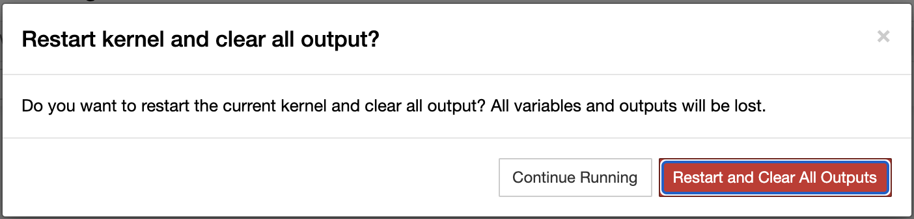

Adapted by Kate Kryder from two notebooks created by Nathan Kelber and Ted Lawless for JSTOR Labs under Creative Commons CC BY License.
See here for the original versions. Some content was also adapted from notebooks created by Sarah Connell and Jen Ferguson for earlier versions of this workshop.
To start this interactive lesson, click on the rocket ship in the top navigation and then select “Binder” to launch the Jupyter Notebook.

When you are in the interactive environment, you will see a Jupyter logo in the upper left-hand corner.

Welcome to your first Jupyter notebook!¶
You are currently looking at a document in an online tool called Jupyter Notebooks.
This document is called a “notebook” and contains blocks of text, images, and code that you can interact with.
Any time you open a notebook, you will be working on your own temporary copy that you can edit without affecting the original or anyone else’s work. So please feel free to press buttons and edit and delete things without fear. You can always close and re-open this document if you need to start over.
Why are we using Jupyter Notebooks?¶
There are two reasons we are using notebooks for this workshop:
They allow you to write code immediately.
A notebook is like a virtual computer that is ready for you to write and run code in immediately. This means you can start coding without having to install the programming language (in our case Python) or a program to write the language in (an “Integrated Development Environment” or “IDE” such as Visual Studio) on your own computer.They look prettier than raw code.
Jupyter Notebooks combine text, images, and code so that the document you are working in looks more like a website than raw code. This makes the code easier to annotate and to follow and learn from. Here is a comparison of the same code and comments in a Jupyter Notebook and in raw code:
| Jupyter Notebook | Raw Code |
What am I looking at?¶
There are two parts to a notebook:
Document controls
Document content, which is made up of components called “cells”
{kind=link}
What are cells?¶
Similar to the way a word document is composed of paragraphs, Jupyter notebooks are composed of cells that contain different kinds of content. There are two types of cells:
Markdown Cells — Contain text and images.
Code Cells — Contain code that you can run.
The text you are reading right now is in a Markdown cell. If you were to edit it, you would see that it is written in “Markdown,” a shorthand writing system that allows you to format text to look like a website without having to write HTML. Here is an example of some Markdown and its output:
| Markdown | Output | |
# This makes a header
|
This makes a header This makes regular text.
|
Below is a a code cell. You can recognize it by the pair of brackets and a colon on the left, like so [ ]:
# This is a code cell
How do I interact with cells?¶
The buttons at the top of the Jupyter Notebook are controls that allow you to add, remove, move, run, or change the type of cells. To get familiar with the controls, let’s go through a series of exercises.
Exercise 1: Run a code cell.¶
To run the code cell below, click on the cell and then press the “Run cell” button ().
{kind=link}
1 + 1
When you have run the cell, you should see an output appear like so:
{kind=link}
You will also see the brackets on the left change from being empty, to containing a number. This tells you that the cell has successfully been run. Brackets will give you information about a code cell, like so:
[ ]:never been run[*]:still running[1]:was run 1st of all the cells in the document[7]:was run 7th of all the cells in the document
If you run this code cell a second time, you will see the brackets change to [2]:. The number will always update to reflect the last time you ran the cell.
Running code cells is something you will do a lot of during this workshop. You can either press the run button each time, or you can use the following keyboard shortcuts:
Windows: press Ctrl + Enter
Mac: press Shift + Return
Exercise 2: Edit a Markdown cell.¶
To practice editing a Markdown cell, double-click on the Markdown cell below:
This text looks a little different than the other text on this page because it uses the “>” block-quote markdown symbol.
When you have double-clicked the cell, you should see something like this:
{kind=link}
What you are seeing is:
Markdown. — This gray box is where you can edit the Markdown by clicking in the box and then typing.
Output. — This is a preview of what the Markdown will actually look like.
At any time, you can make the gray edit box disappear by pressing the “Run cell” button (). You will then only see the output.
If you would like to learn more about Markdown, check out this quick Markdown guide or this longer Markdown tutorial.
Double-click on this markdown cell¶
Exercise 3: Add a cell.¶
To add a cell, click on this cell and then click on the “Insert cell bellow” button (). This should add a cell below this one, between these lines:
{kind=link}
When you have added a cell, you should see a blank code cell like this:
{kind=link}
The default type of cell is a code cell. You can change the type at any time by click on the the “Code” drop-down () and changing it to “Markdown” ().
{kind=link}
{kind=link}
Exercise 4: Delete a cell.¶
To delete a cell, click on one of the practice cells below and press the “Cut selected cells” button ().
{kind=link}
# delete me!
# delete me!
# delete me!
You should see that cell disappear.
Exercise 5: Restart this notebook.¶
To completely restart this notebook and clear all of your work, click on the “Kernel” menu () and then click on the “Restart & Clear Output” option.
{kind=link}
{kind=link}
Then, click “Restart and Clear All Outputs” on the pop-up window that appears.
{kind=link}
This will completely reset the notebook.
Lesson Complete!¶
Next, we’ll look at Getting started with Python!
If you’re curious about how we have set this notebook up, read on:
Binder is the environment we are using to access (“run”) our Jupyter Notebooks inside a browser. It’s kind of like a separate computer in the cloud that makes all of tools we need to use in Jupyter Notebooks work. We’re using Contellate’s Binder for this session, but anyone can create their own Binder.
We use Github to store the Jupyter Notebooks (.ipynb files) for this session. Like any other computer, Binder will power down after a while–basically after a certain period of inactivity. So we need a place to make our Jupyter Notebooks available, and tell Binder where to find them the next time we start up a Binder session to interact with our notebooks.